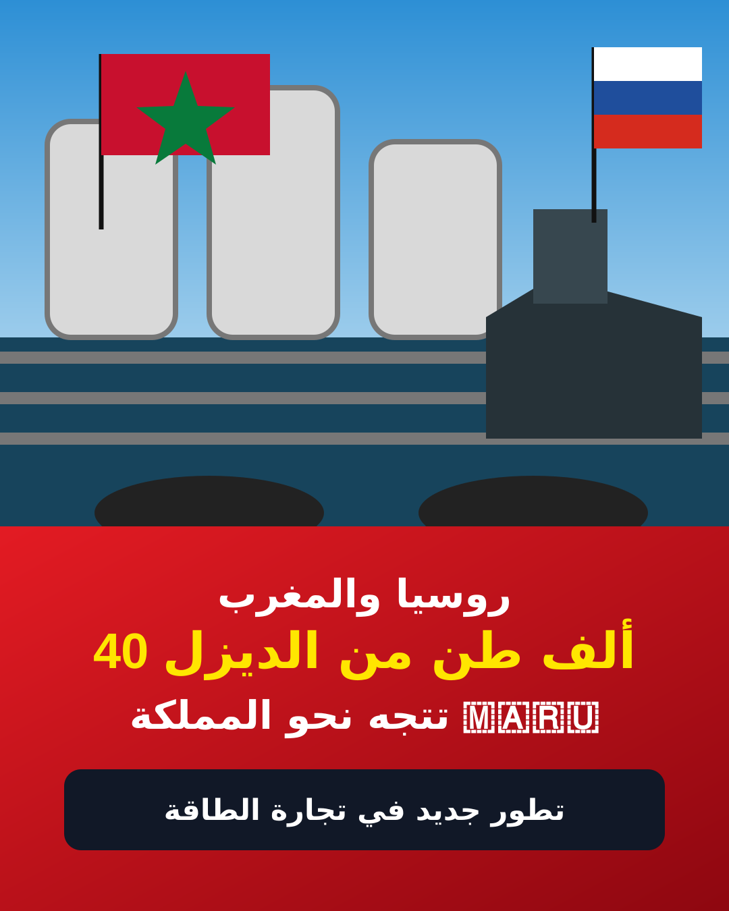

روسيا والمغرب.. ناقلة تحمل 40 ألف طن من الديزل تتجه نحو المملكة

تتجه ناقلة محملة بنحو 40 ألف طن من الديزل الروسي منخفض الكبريت نحو المغرب، في واحدة من أبرز شحنات الوقود الروسية التي ظهرت بعد استئناف موسكو جزءاً من صادرات الديزل.
وبحسب بيانات تتبع الملاحة التي نقلتها وسائل إعلام عن مجموعة بورصة لندن للأوراق المالية (LSEG)، جرى تحميل الشحنة يوم 13 أكتوبر في ميناء بريمورسك الروسي على بحر البلطيق، وكانت وجهتها المعلنة المغرب.
وتأتي هذه الشحنة بعد تخفيف روسيا بعض القيود على صادرات الديزل اعتباراً من 10 أكتوبر، في سياق تحركات مرتبطة بإعادة إمداد الأسواق العالمية بالوقود. كما تحدثت تقارير عن ترتيبات أمريكية مؤقتة تسمح ببعض المعاملات المتعلقة بالوقود الروسي.
ويعتمد المغرب بشكل كبير على واردات المنتجات النفطية، لذلك تثير الشحنات الجديدة اهتماماً خاصاً في ظل ارتفاع أسعار المحروقات وتقلبات أسواق الطاقة العالمية.
وتشير تقارير حديثة أيضاً إلى وجود حركة تجارية في الاتجاه المعاكس، إذ استقبلت روسيا خلال الأشهر الماضية شحنات من المنتجات النفطية انطلقت من ميناء طنجة، ما يعكس تشابك تجارة الوقود بين البلدين.
ملاحظة تحريرية: لا توجد في المعطيات التي اعتمدنا عليها تفاصيل مؤكدة تفيد بأن وزير الخارجية الروسي سيرغي لافروف أعلن شخصياً أن روسيا ستوجه البنزين والديزل إلى الموانئ المغربية. المؤكد هو وجود شحنة ديزل روسية متجهة إلى المغرب وفق بيانات التتبع وتقارير إعلامية متعددة.
← العودة إلى الصفحة الرئيسية